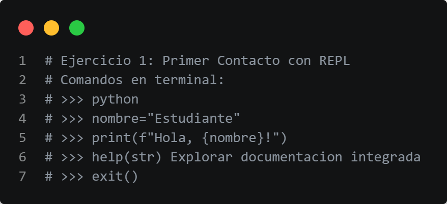

Mi Stack Tecnológico
Como estudiante de la UMSA, he trabajado en diversos entornos de desarrollo. Mi enfoque principal está en el desarrollo Backend y la Ciberseguridad.

Mi Filosofía en Código
Un pequeño bloque en Python que describe mi enfoque de vida y estudio:
def superar_retos(esfuerzo, constancia):
exito = False
while not exito:
if esfuerzo + constancia > obstaculo:
exito = True
print("¡Meta alcanzada!")
else:
esfuerzo += 1
return exito